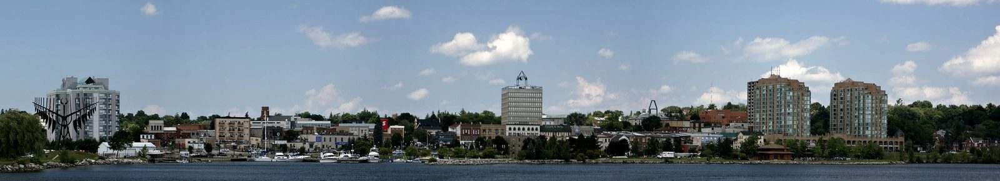
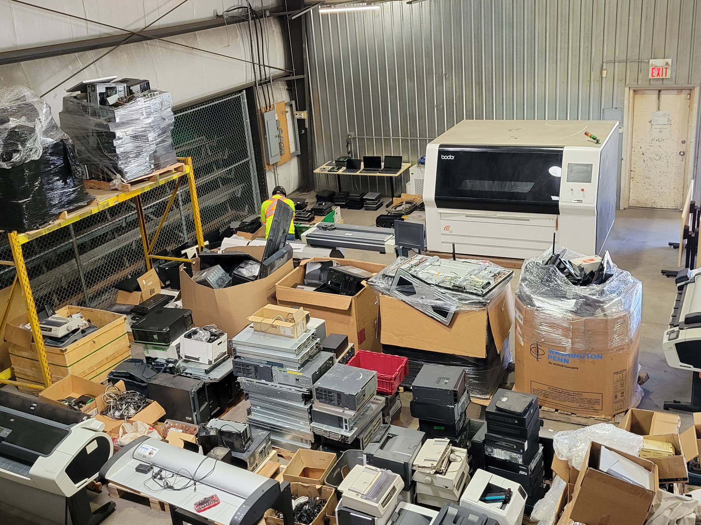

Electronics recycling in Barrie.
Commercial electronics recycling pickups can be coordinated in Barrie and nearby Central Ontario communities for eligible business and institutional equipment.
Free qualifying commercial pickups are available, with no membership or annual program fees.

Clearing out old computers or electronics?
Whether you are replacing laptops, decommissioning servers, cleaning out storage or dealing with mixed electronics, CPER can review the project and help coordinate the right service.
Computers, servers, networking equipment, phones, monitors, cables, circuit boards and more.
Data erasure or physical destruction with documentation available when required.
Working equipment can be evaluated for refurbishment, resale, donation or parts recovery.

Pickup coverage around Barrie
Projects may be reviewed in Innisfil, Orillia, Bradford West Gwillimbury, Essa, Springwater, Oro-Medonte, Wasaga Beach and nearby communities. Availability depends on equipment type, volume, timing and route capacity.
Electronics recycling in Barrie
Does CPER pick up electronics in Barrie?
CPER can coordinate qualifying commercial electronics pickups in the Barrie area. Send your equipment list, approximate quantities, location and timing so we can confirm availability.
What electronics can businesses recycle?
Common items include laptops, desktops, servers, storage systems, networking equipment, phones, tablets, monitors, printers, cables, circuit boards and other electronics. Specialized equipment can be reviewed.
Can you securely destroy data?
Yes. Secure sanitization or physical destruction can be included, with serialized reporting and certificates available when required.
Tell us what you have
You do not need a perfect inventory. A rough count, a few model numbers and some photos are usually enough to start.